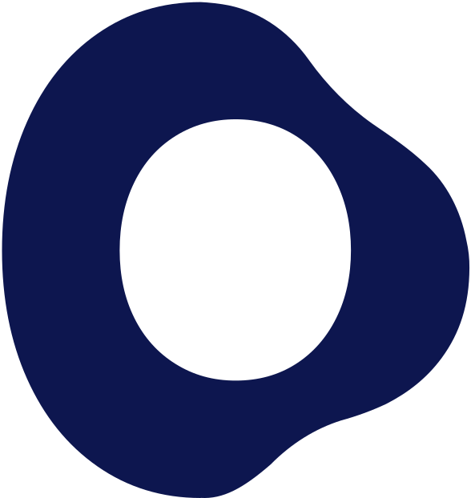

Audience, activation and retention: the path back on course toward 5,000 by June 30, and on to a much larger year-end ambition.
Navigate with arrow keys, click, or swipe.

This year, and looking ahead.
Actuals to date: spend, runway and the metrics that matter. Content supplied separately.
Projections for the remainder of the year and the runway implication.
Where we stand, where we're heading, and the levers that get us there.
Build the team, habits and foundation to scale Ditto internationally.
Build the growth loop that compounds into 5,000 MAU by June 30.
Core MAU = unique users who view at least one summary in a calendar month (summary_viewed). May: 2,162.
We grow about 20% month over month and have for three months running. Steady, but linear, while the goal is far steeper.
So the headline reads red. The next two slides show why it's closer to orange, and how we get back on course.
Summary views are only part of how people use Ditto. Once we count appointment preparation the appointments people add and act on, engaged monthly users reach about 3,066 in May, roughly 42% above the strict count.
Strict summary viewed stays our reported North Star. Expanded figures are an estimate pending the exact event union. This is the engagement we're already creating, and the definition we grow into as activation broadens beyond the summary.
The ambition compounds at ~8.65% week on week to ~50,000 by year-end. At today's pace we drift far below it.
At today's ~20% MoM we land near 7,700, about 85% below the 50,000 ambition. The gap between the lines is what the three levers must close.
Each slide follows the same shape: the signal on the left, the initiatives and exit decisions on the right.
Get the right people in. Severe, high-intensity care paths where Ditto compounds.
Get them to first value fast, and widen what counts as value beyond the summary.
Turn every patient into a circle that pulls in more users, and keeps them.
High-intensity care paths, where the need is acute and people share.
Share of categorised summaries by specialty (~29% coverage; users may appear in more than one).
Cardiology comes largely from our Hartklinieken partnership, a named B2B channel. Oncology patients return and view about 2× more summaries over time (2.2× week-1 retention), and their invites are accepted 1.8× more often (78% vs 53%).
Stop broad paid performance marketing. Reallocate to targeted, specialty-led acquisition.
Activation today = a user's first summary. Two moves: lift the rate, and widen what counts.
The first summary is the bar. We are lifting the rate at onboarding, and widening what counts as value so activation no longer depends on a same-day appointment.
Now experimenting · Calendar pull. On-device, bilingual keyword matching (local models) reads the appointments already in your phone, pre-fills them in Ditto, and reminds you to record. It pulls activation forward to before the visit. Launched June 1; first pulls landing.
v2 shipped in March and grows fast off a near-zero base. It doesn't compound yet.
Followers are starting to view summaries (+46% MoM), exactly the behaviour we want. But the loop is sub-critical: K-factor ≈ 0.10, well below 1. And 75% of Core MAU still has no circle, while moving someone to even one member doubles their monthly summary views, our largest untapped lever.
Synergy with Lever 1. This compounds fastest with the right people in: in oncology, patients create more summaries, add more people, and share more often.
Deep dives.
Market, product and any supporting detail land here. Add one slide per deep dive as needed.